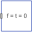

RectangleVisualizing a planar rectangular surface |
Diagram
{kind=link}
Information
This information is part of the Modelica Standard Library maintained by the Modelica Association.
This model visualizes a planar rectangle. The center of the rectangle is located at connector frame_a (visualized by the red coordinate system in the figure below). The figure below shows two rectangles of the same parameters
nu = 8, nv = 3, length_u = 3, length_v = 2.
The green rectangle on the right is visualized in wireframe thus highlighting the influence of the discretization. Moreover, the u-axis of this rectangle is modified so that the rectangle is rotated about the z-axis of frame_a.
Parameters (8)
| animation |
Value: true Type: Boolean Description: = true, if animation shall be enabled |
|---|---|
| direction_u |
Value: {1, 0, 0} Type: Axis Description: Vector along u-axis of rectangle resolved in frame_a |
| direction_v |
Value: {0, 1, 0} Type: Axis Description: Vector along v-axis of rectangle resolved in frame_a |
| length_u |
Value: 3 Type: Distance (m) Description: Length of rectangle in direction u |
| length_v |
Value: 1 Type: Distance (m) Description: Length of rectangle in direction v |
| nu |
Value: 3 Type: Integer Description: Number of points in direction u |
| nv |
Value: 2 Type: Integer Description: Number of points in direction v |
| wireframe |
Value: false Type: Boolean Description: = true: 3D model will be displayed without faces |
Inputs (3)
| color |
Default Value: {0, 128, 255} Type: RealColor Description: Color of surface |
|---|---|
| specularCoefficient |
Default Value: 0.7 Type: SpecularCoefficient Description: Reflection of ambient light (= 0: light is completely absorbed) |
| transparency |
Default Value: 0 Type: Real Description: Transparency of shape: 0 (= opaque) ... 1 (= fully transparent) |
Connectors (1)
| frame_a |
Type: Frame_a Description: Coordinate system in which visualization data is resolved |
|---|
Components (3)
| world |
Type: World |
|
|---|---|---|
| surface |
Type: Surface |
|
|  | zeroForceAndTorque |
Type: ZeroForceAndTorque |